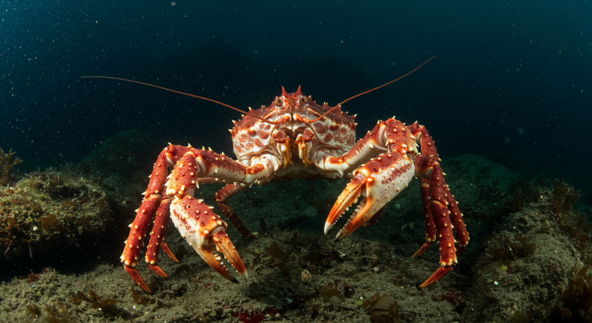
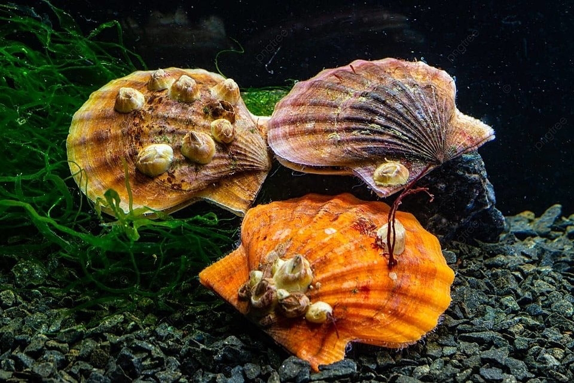
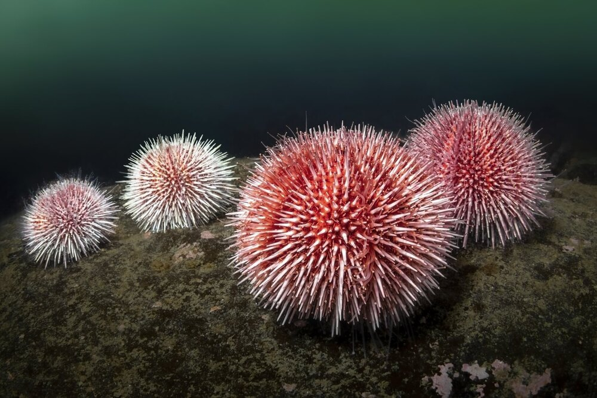
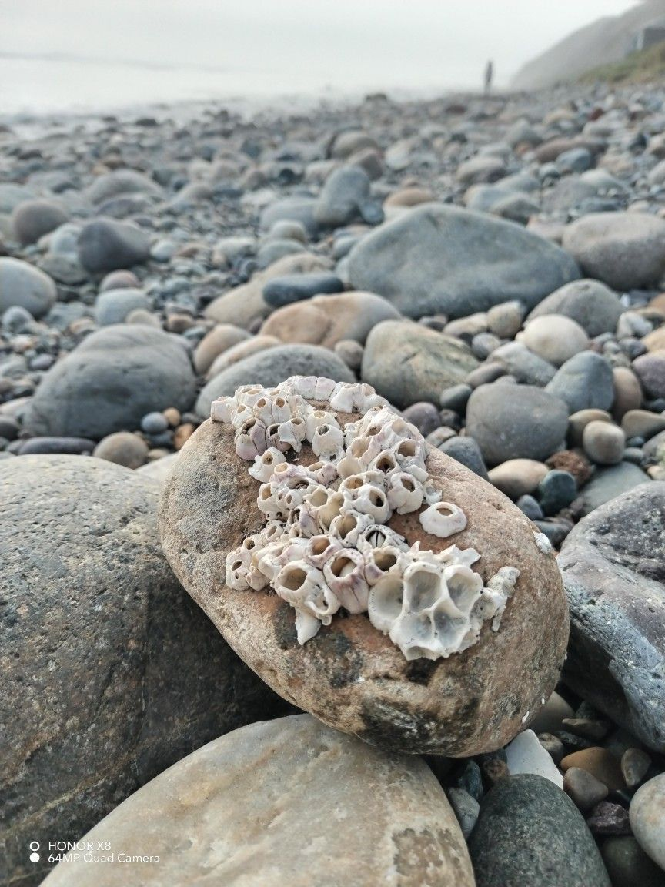
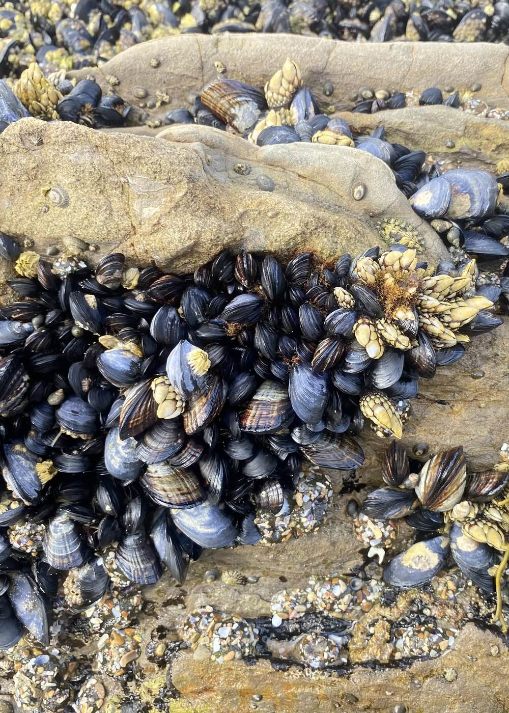
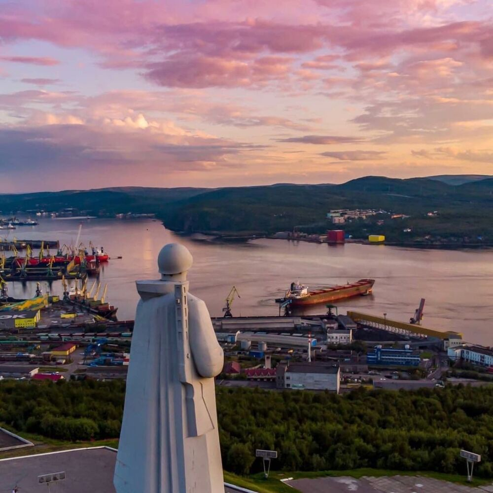
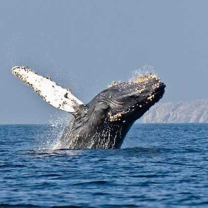

Echinus esculentus (европейский съедобный или обыкновенный морской ёж) обитает в прибрежных районах Западной Европы. Также его можно встретить в Атлантическом океане у берегов Европейского континента — от Испании до Шпицбергена.
Тело морского ежа «собрано» из отдельных, неподвижно закрепленных известковых пластин, образующих шаровидный панцирь, который усеян стройными рядами игл. При близком знакомстве можно заметить, что под длинными жесткими иглами прячутся подвижные трубочки-присоски — так называемые педициллярии, похожие на гибкие стебельки. Они служат для очистки поверхности тела от наростов, водорослей и инородных организмов.

1) Каннибализм и рацион: Морские ежи всеядны и не брезгуют поедать своих же сородичей.
2) Симбиоз с рыбами: Мелкие рыбы часто прячутся между иглами ежей, получая защиту, а взамен очищают их от паразитов.
3) Икра морского ежа содержит колоссальное количество витаминов (в 20 раз больше, чем в женьшене), микроэлементов и омега-3 жирных кислот, что делает ее ценным деликатесом.
Камчатский краб (Paralithodes camtschaticus), известный в мире как «королевский краб», занимает особое место среди морских обитателей. Этот вид, относящийся к семейству крабоидов (Lithodidae), формально не является настоящим крабом, а представляет собой неполнохвостого рака, близкого к ракам-отшельникам. Его внушительные размеры — до 1,8 метра в размахе ног и вес, достигающий 12 килограммов, — сделали его легендой северных морей.
1) Заселение камчатского краба в Баренцево море было одним из проектов советской рыбохозяйственной отрасли 1930–1960-х годов. В 1932 году заместитель начальника «Главрыбы» А. М. Головский предложил переселить камчатского краба на север. Первые попытки перевозки в 1931–1935 годах оказались провальными. В 1960 году первая партия крабов была успешно доставлена самолётом в Мурманск, а в 1961 году в Баренцево море выпустили около 1,6 миллиона личинок. С 1961 по 1969 годы туда завезли около 3 тысяч взрослых особей, 10 тысяч молоди и миллионы личинок. К 1974 году первые крабы начали попадаться в Кольском заливе, а к 1977 году их заметили у берегов Норвегии, где их прозвали «сталинскими крабами».
2) «Некраб»: Биологически камчатский краб — это не краб, а рак-отшельник (неполнохвостый рак), у которого всего 8 ходильных ног, а не 10, как у настоящих крабов.
3) Истинный завоеватель: В Баренцевом море у него почти нет естественных врагов, кроме человека, что способствовало взрывному росту популяции.
Морские гребешки — это двустворчатые моллюски, способные перемещаться даже на большой глубине с помощью собственных створок. Они так часто ими «хлопают», что создается реактивная тяга и моллюск передвигается с места на место.
Обитающий в морях и океанах, морской гребешок предпочитает скалистые и песчаные донные грунты, где он крепко прикрепляется к подложке с помощью своих веерообразных раковин.
1) Удивительно, но морские гребешки — это не только полезный морепродукт, но и культурная ценность. Ещё в античные времена гребешки были символом Афродиты-Венеры. На знаменитой картине Боттичелли «Рождение Венеры» изображена именно раковина большого гребешка. Стилизованное изображение морского гребешка вы можете увидеть на логотипе крупнейшей нефтегазовой компании Royal Dutch Shell.
2) По краям мантии гребешка расположено около 100 маленьких голубых глаз, которые отлично видят в темноте.
3) В прошлом раковины гребешков служили разменной монетой в некоторых странах.
Тело морских желудей целиком находится внутри твердой известковой раковины, состоящей из пластинок. Часть их неподвижно соединена друг с другом и составляет стенки домика, другие образуют «крышу». На дне домика спиной вниз лежит рачок, выставив обращённый кверху рот. Раздвигая пластинки «крыши», он время от времени просовывает в образовавшуюся щель грудные ножки. Шевеля ими, загоняет внутрь домика воду и мелких планктонных животных, которыми питается.
Морские желуди ведут сидячий образ жизни, прикрепляясь к всевозможным подводным предметам — камням, сваям, днищам судов.

1) Чарлз Дарвин посвятил изучению балянусов более восьми лет своей жизни (примерно с 1846 по 1854 год). Этот период стал ключевым этапом в его научной карьере перед публикацией «Происхождения видов».
2) Балянусы вырабатывают специальный белковый цемент, который настолько прочен, что считается одним из самых сильных биологических клеев в мире. Он не растворяется в воде и работает даже на тефлоне.
3) Цусимская трагедия: Во время Русско-японской войны балянусы сыграли роковую роль — из-за долгого перехода корабли русской эскадры обросли ими, что снизило скорость судов и стало одной из причин поражения.
Мидии — это морские двустворчатые моллюски (семейство Mytilidae), ведущие прикреплённый образ жизни. Они фильтруют воду, питаясь планктоном, и живут сплошными колониями (банками) на скалах, камнях и искусственных субстратах. Эти беспозвоночные широко распространены, активно выращиваются на марикультурных фермах и являются ценным пищевым продуктом, богатым белком.

1) Символ любви в Японии: Из-за крепко закрытых створок, которые сложно открыть, мидии в Японии считаются символом супружеской верности, их часто подают на свадьбах.
2) В ресторанах Кувейта не подают мидии в закрытом виде. Всё потому, что внутри раковины можно обнаружить жемчужину. В этой стране покупать закрытые раковины — принимать участие в азартных играх.
3) Некоторые виды мидий могут жить десятилетиями. В холодных водах северного полушария найдены мидии, которым более 100 лет.
ТО, ЧТО ИНТЕРЕСНО


Баренцево море — место, где стрелка часов замирает и ты остаёшься наедине с собой, пением китов и бескрайними горами